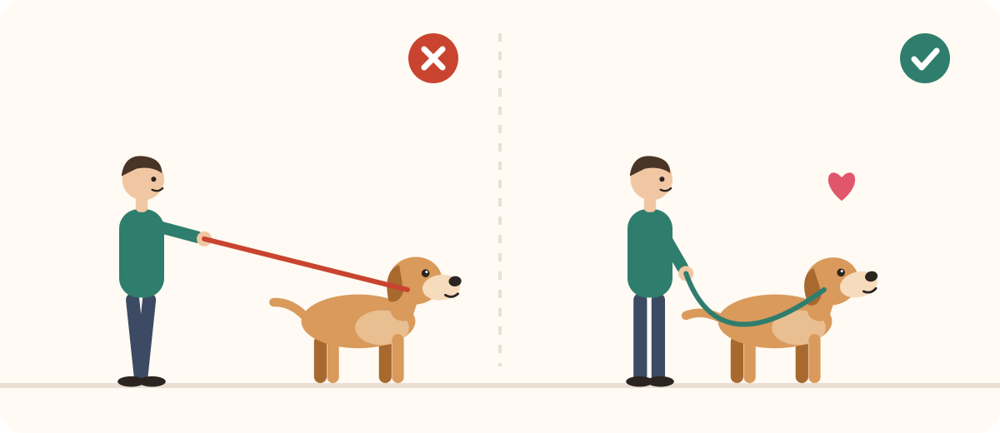
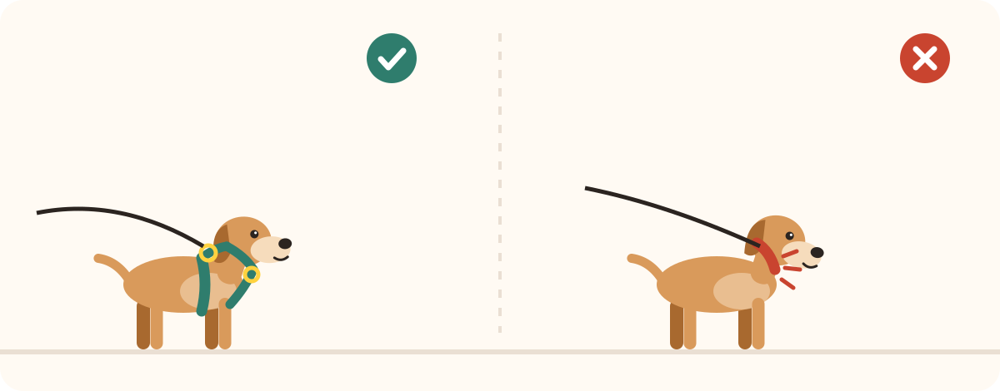
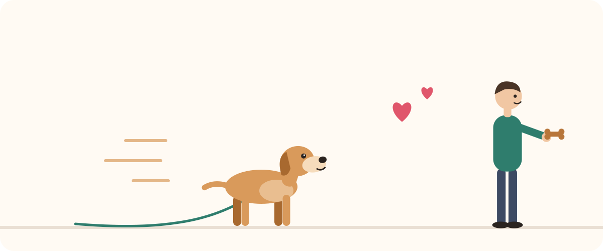
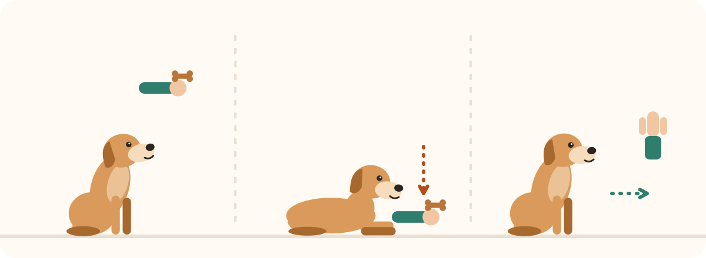

Chien qui tire en laisse : la méthode pour qu'il arrête
Bras douloureux, balades pénibles, chien qui s'étouffe… Tirer en laisse est l'un des problèmes les plus fréquents. Bonne nouvelle : il se règle sans force, avec de la cohérence.
Pourquoi les chiens tirent
Tout simplement parce que ça marche : à chaque fois qu'il tire, il avance vers ce qu'il veut sentir. Le chien marche aussi naturellement plus vite que nous. Il ne cherche pas à « dominer » : il a juste appris que tirer est efficace.
La règle d'or : laisse tendue = on s'arrête

C'est la « méthode de l'arbre ». Dès que la laisse se tend, vous vous immobilisez comme un arbre. Vous attendez qu'il relâche la tension (il se retourne, recule d'un pas, s'assoit). Dès que la laisse redevient souple : « Oui ! » et vous repartez. Il apprend que la laisse détendue fait avancer.
C'est une application directe du principe de Premack : avancer vers ce qui l'intéresse devient sa récompense.
Récompenser la bonne position
Pendant la marche, chaque fois qu'il est à votre hauteur avec la laisse souple, marquez (« Oui ! » ou un clic) et donnez une friandise au niveau de votre jambe. Au début, récompensez tous les 2-3 pas, puis espacez.
Petites et molles, elles se mangent en une seconde sans casser le rythme de la marche.
Les changements de direction
S'il fonce devant, faites demi-tour en douceur en l'invitant joyeusement à vous suivre, puis récompensez quand il vous rejoint. Il apprend à garder un œil sur vous, car vous êtes imprévisible.
Le bon équipement

Un collier sur lequel le chien tire comprime la trachée et la gorge. Un harnais en Y, qui laisse les épaules libres, est bien plus confortable et sûr. Associé à une laisse de 2 m, il donne assez de mou pour que le chien puisse marcher sans tension.
Choisissez-le bien ajusté (deux doigts sous les sangles) et qui ne passe pas devant les épaules.
Combien de temps faut-il ?
Les premiers progrès apparaissent en quelques jours si toute la famille applique la même règle à chaque sortie. Pour les vraies balades « hygiéniques » où vous n'avez pas le temps de travailler, utilisez un équipement différent (ex. attache dans le dos du harnais pour l'entraînement, attache devant pour les sorties rapides) afin de ne pas mélanger les règles.
Pour aller plus loin : apprendre le rappel en 7 étapes · le guide complet du chien.
À lire aussi

Quelle pochette à friandises choisir ? Le comparatif
Clip, banane, silicone ou gilet : quelle pochette choisir pour récompenser votre chien au bon moment, à la maison comme en balade.

Quelles friandises d'éducation pour son chien ? Le comparatif
Molles, séchées, lyophilisées, en tube ou maison : quelles friandises choisir pour motiver votre chien pendant l'éducation.

Apprendre « assis », « couché » et « pas bouger » à son chien
Le leurre pour assis et couché, puis les « 3 D » pour un pas bouger solide : la méthode douce, étape par étape.